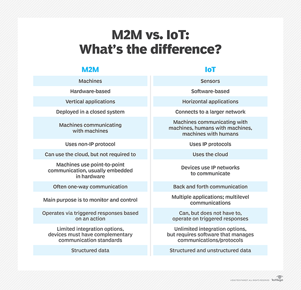
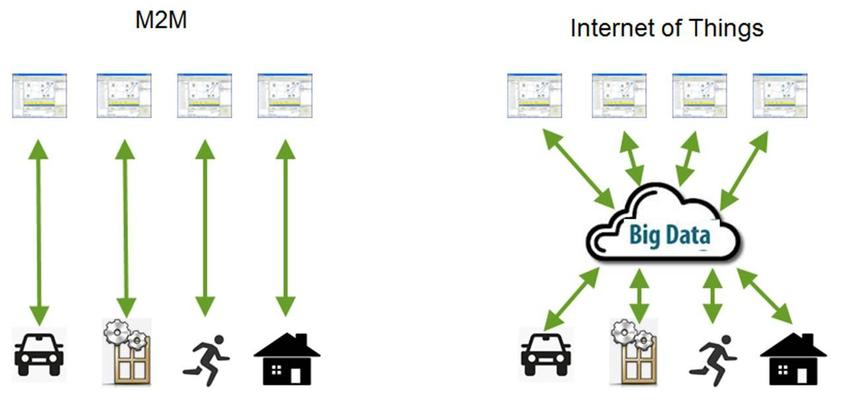
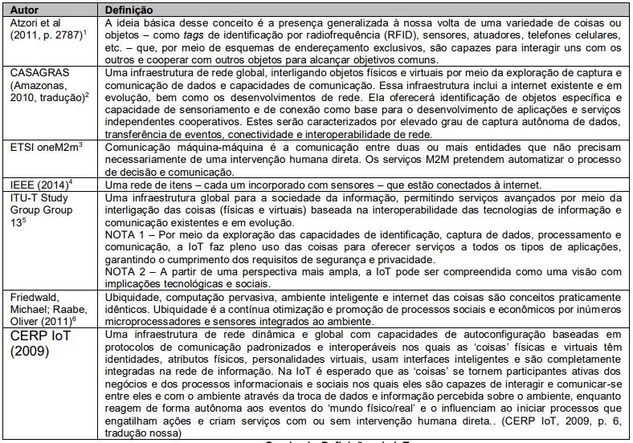

INTERNET DAS COISAS: DIFERENTES VISÕES E CONCEITOS
A Internet das Coisas(IoT) não é um conceito que surgiu do nada, existem algumas tecnologias que contribuem para sua criação, como Redes de sensores sem fio (WSN) e comunicação máquina a máquina (M2M).
Redes de sensores sem fio (WSN):
- Ele consiste em uma série de nós de detecção sem fio que se comunicam em vários saltos(multi-hop).
- Ele é projetado, desenvolvido e usado para uma aplicação específica.
Algumas áreas de aplicação:
- Monitoramento ambiental
- Saúde
- Agricultura
- aplicações militares
- aplicações domésticas, etc ...
Para usar Redes de Sensores para fins de IoT, é necessário um middleware que resolva alguns problemas:
- Suporte de abstração
- Consolidação de dados
- Restrições de recursos
- Topologia dinâmica
- Informação da área de aplicação
- Abordagens de programação
- Adaptabilidade
- Escalabilidade
- Suporte de segurança e QoS
Comunicação entre máquinas (M2M):
- A comunicação M2M refere-se à comunicação direta com ou sem fio entre dispositivos usando qualquer canal de comunicação, que não requer intervenção humana direta.M2M é visto como o pioneiro da IoT.
- A comunicação M2M pode permitir que um sensor ou dispositivo de medição transmita os dados registrados para o software aplicativo que pode processá-los posteriormente.
- Destina-se a monitorar máquinas remotas das quais os dados são recebidos. Os dados processados em algumas centrais são transmitidos de volta para essas máquinas, se necessário, com parâmetros ajustados.
- A principal motivação para muitas organizações é reduzir os custos de gerenciamento de serviço por meio de diagnósticos remotos, solução de problemas, atualizações e outros recursos remotos que reduzem a necessidade de usar pessoal de serviço de campo.
 
O termo Internet das Coisas é um pouco confuso, não está bem definido nas pesquisas científicas, conferências realizadas no mercado e na academia, e está sujeito ao debate filosófico (RAIWANI, 2013; KRANENBURG, 2011). Muitas vezes, esse termo é chamado de physical internet, ubiquitous computing, ambient intelligence, machine to machine (M2M), industrial internet, web of things, connected environments, smart cities, spimes, everyware, pervasive internet, connected world, wireless sensor networks, situated computing, future internet, physical computing (POSTSCAPES, 2017b), ambient technology, ubiquitous technology, sensor web, sensor, network, wireless, sensor networks, smart dust, smart data, smart grid, cloud data, web 3.0, Object Naming System (KRANENBURG, 2011).
O Quadro a seguir, mostra alguns conceitos de Internet das Coisas encontrados na literatura:
As definições de Internet das Coisas expostas no Quadro incluem apenas as tecnologias, não se preocupando com o fator humano nesse relacionamento tecnológico entre as coisas. A definição do CERP IoT (2009) reúne diversos fatores que são a base da internet das coisas: uma rede global composta de objetos conectados, de agirem por conta própria, com ou sem supervisão humana (SINGER, 2012).
Conteudos
- MAS AFINAL, O QUE É A INTERNET DAS COISAS (IoT) ?
- HISTÓRIA DA INTERNET DAS COISAS
- INTERNET DAS COISAS: DIFERENTES VISÕES E CONCEITOS
- COMPONENTES DA INTERNET DAS COISAS
- AREAS DAS APLICAÇÕES EM INTERNET DAS COISAS
- VANTAGENS E DESVANTAGENS DA INTERNET DAS COISAS
- TECNOLOGIAS DE COMUNICAÇÃO E DE DESENVOLVIMENTO EM INTERNET DAS COISAS
- OneM2M COMO UM PADRÃO DE IoT
- ECLIPSE OM2M